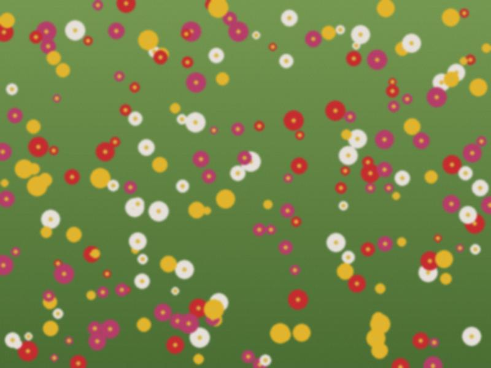

Archive for the ‘church’ Category
Morning at the cathedral in Iyık Janyl, the crowning (burakha). I was a guest. The priest read, the couple wore garlands, the groom's mother put the white elechek on the bride, and they shared the cup of wine. The bride cried before anything started. The groom smiled at the wrong moment, as always.
After, the lunch for the family. Then the toi in Talas at six. A long road in between and the bride's grandmother asleep in my car. I took the long way to let her sleep.

Garlands on the church bench, 10.40, before the guests came.